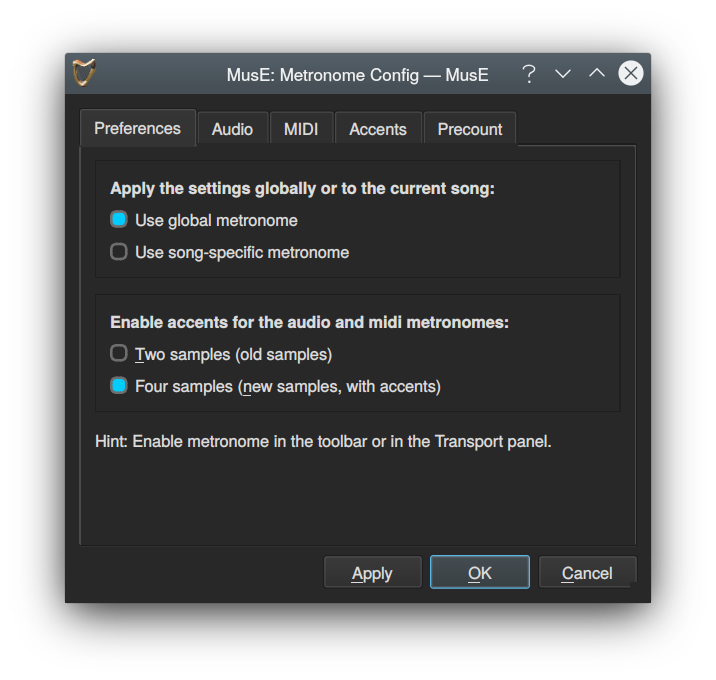

Configuración del Metrónomo
El metrónomo en MusE se habilita con el botón de la barra de herramientas del Metrónomo o con el atajo de teclado C
La configuración del metrónomo se puede realiza con el menú Configuración ➜ Metrónomo.

It can be configured to output clicks on the audio output and/or emit MIDI to be played back by an external MIDI device. By default audio output is enabled but not MIDI.
Puede configurarse para generar clics en la salida de audio y/o emitir MIDI para ser reproducido por un dispositivo MIDI externo. Por defecto, solo la salida de audio está habilitada.
Con MusE se incluyen algunas muestras de sonido para utilizarlas como sonido de metrónomo. Si tiene un sonido de metrónomo favorito, también es posible copiar este archivo como .WAV a la carpeta metronome en share/muse-4.0/metronome in the installation. creada en la instalación.
Tempo y mapa de Tempo
La configuración predeterminada para el metrónomo es 120 bpm (120 pulsos por minuto), pero sería poco útil si no fuera configurable. Esto se puede cambiar en la barra de herramientas Tempo o en el panel de transporte View ➜Transport panel, o en el atajo de teclado F11.
Además, de forma predeterminada, el tempo de la pista maestra (Mastertrack-tempo) está habilitado (el botón verde en la barra de herramientas Tempo o el panel de transporte). Esto puede resultar un poco confuso para el principiante, pero para hacer música con cambios de tempo es una necesidad.
Lo que significa en la práctica es que el cambio de tempo se agrega como un cambio de tempo donde se encuentra actualmente el cursor de reproducción. Por lo tanto, si no está haciendo música con cambios de tempo, asegúrese de desmarcar el botón de tempo de pista maestra mastertrack-tempo o siempre haga el cambio después de haber rebobinado la canción al principio.
Si ha realizado un cambio de tempo sin querer y es un poco tarde para deshacerlo, el editor de la lista de pistas maestra Mastertrack list es su amigo.